TITLE BAR
SHORT TITLE BAR
NO TITLE
Starting from version 4.0, Sirius supports the definition of properties views with many features like complex styling, validation, context etc.
Properties views are defined inside the VSM in a way that is similar to other Sirius representations. The configuration elements in the VSM identify a sub-set of the elements in the semantic model to which they apply, and associate to them widgets, which will be visible in the Eclipse Properties View to view and edit the elements’s properties.
The configuration maps semantic elements onto some properties view elements. At runtime, each active properties element (pages, groups, widgets) will produce zero or more elements in the properties view, depending on how many semantic elements currently match the properties element’s definition. Whenever the current selection changes Sirius will automatically re-compute which elements should appear in the properties view according to the active widgets, and create or remove the necessary elements in the properties view.
Sirius properties view are enabled whenever the selected element is part of an opened session, i.e. any element selected inside a Sirius editor or from the Model Explorer view on an opened session.
Note that if you have the (optional) support for Sirius-defined properties views correctly installed but do not specify anything inside your VSMs, Sirius will apply default generic rules to provide a canonical properties view for your model elements. As soon as you specify your own configuration, as described in this document, the default rules will be ignored in favor of yours. See below for how both approaches can be combined.
Properties view are configured by creating a Properties View Description element (directly under the top-level Group element of the VSM) and its sub-elements (which describe the widgets, the actions, the layout, etc.).
Like many elements inside a VSM , View Extension Description have an optional Identifier, which should be unique.
Inside a Properties View Description element, you can create:
Inside a Category element, you can create:
It is recommended that the Properties View Description be explicitly associated with the meta-model(s) of the semantic elements it will represent. You can add referenced meta-models from different sources in the Metamodels property section of the Properties View Description. Sirius will work even without this association, but setting it explicitly will give you better feedback when validating your VSM .
The descriptions for all the different types of properties view elements share the same common principles:
Context. Each properties view element is defined in a context in the VSM. At runtime, the corresponding context element would be the semantic element associated to the properties view element description. This context element is used as a starting point to determine which instances of a properties view element description should be created on the properties view:
This order of evaluation should be kept in mind when specifying properties view. In particular, to avoid performance issues you should:
Properties View Elements Definition. Properties views support several different types of elements, which are described in the following sections. They are:
Default Properties View Rules. When no properties view definition is found for an element selected by the user, Sirius will apply default rules which attempt to give a usable (if generic) result for most user models. As soon as you define some custom rules for your modelers, only these custom rules will apply, and the default ones will be ignored. If you want to mix the default rules for some of your elements and custom ones only for some specific types, you can:
Legacy Sirius Tabs. By default, the legacy Semantic and Default tabs which show the raw properties of the selected element in a plain property grid are still visible even when you have defined custom properties views (the Semantic tab is visible when the selection is from a Sirius representation; the Default tab is shown when selecting from the Model Explorer). If you want to hide these legacy tabs and only show your custom tabs, you can do so by changing the preferences in the Sirius > Sirius Properties View category.
The following attributes are mostly shared by all the properties view element description (page, group, container, widget).
Identifier. Each properties view element description defines an optional attribute Identifier. It can be used to distinguish elements of the same type in the VSM editor, and in advanced customization scenarios where the VSM model is programmatically accessed/modified.
Domain Class. The optional
Domain Class attribute is the type of semantic elements which are represented by the properties view element definition. The syntax for the domain class name can be the basic name, like
Package, a qualified name using name of the EMF EPackage which defines the type, like
uml.Package, or a fully qualified URI like
http://www.eclipse.org/uml2/3.0.0/UML#//Package.
An empty
Domain Class means that the element being defined will be applicable to any model element of any type. By default, new properties view elements can be created on
any instance of the
Domain Class.
Precondition Expression. You can use the
Precondition Expression to change this. If such an expression is specified, it will be evaluated in the
context of the semantic element the user has selected, and only if the expression returns
true will the properties view element be applied to that semantic element.
Label Expression. This expression is used to compute the text of the label describing the element (which will typically appear on the left of a widget). The Label expression is evaluated in the context of the semantic element and should return a string. If the expression is not specified, the default label is empty.
Help Expression. The help text of a properties view element is specified using the Help expression, which is evaluated in the context of the semantic element and should return a string. It will appear as a tooltip on the question-mark icon associated to a widget.
Is Enabled Expression. Each widget can be enabled or disabled (making it visible but read-only) . The Is Enabled Expression is evaluated in the context of the semantic element and should return a boolean. It the expression is not specified it defaults to true (meaning the widget is enabled).
Semantic Candidate Expression. The Semantic Candidate Expression defines the model element represented by the properties view element.
Styles. Each kind of properties view element supports a rich set of possible styles.
To find some documentation for each properties, you can also refer to the tool-tips available directly in the editor on the “question mark” icon of each property.
Here is an example of a widget configuration (a single-line text in this case) which illustrates some of the common attributes:
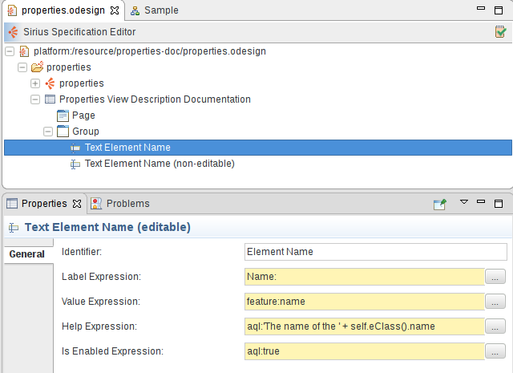
The
Text Element Name (non-editable) element has the exact same configuration except that its
Label Expression is
Name (read-only): and its
Is Enabled Expression is set to
aql:false.
Here is the resulting properties view rendered for a diagram element:
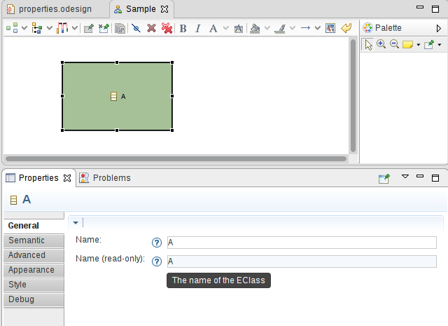
We see both label expressions on the left of each widget, help icons which show the computed Help Expression when the user leaves the mouse pointer on them, and the actual widgets. The second text widget is disabled (visible thanks to the light blue background) because of its Is Enabled Expression.
Beside
self, which represents the current context element on which an expression is evaluated, every expression defined inside a
Property View Description has access to an additional special variable named
input, which offers some additional services. For a given user selection, the value of
input is the same everywhere inside a
Property View Description; it corresponds to a descriptor of what the user select and can be used to obtain contextual information.
Services on
input.
input.getOriginalSelection(): returns the original, raw element selected by the user before any unwrapping or interpretation. This may not be a model element; for Sirius diagrams for example this will be an
EditPart.
input.getSemanticElement(): returns the main semantic element associated with the selection. This will correspond to the
self variable inside a
Page, but inside a group
self may have a different value is
Semantic Candidate Expressions were used, so this service can be used to obtain the “original self” from anywhere.
input.getAllSemanticElements(): returns
all the semantic model elements associated with the selection, not just the main one. This will include additional
DRepresentationElement#semanticElements if there are any.
input.emfEditServices(EObject): provides a handle to invoke “EMF Edit”-related services on the model element specified in argument. See below for the list of services that can be called on the result.
input.context(): provides a handle to invoke additional services to obtain more information about the overall context of the selection. See below fot the list of services that can be called on the result.
Services on
input.emfEditServices(EObject).
In the descriptions below,
obj designates the
EObject instance which was passed to
emfEditServices().
getChoiceOfValues(EStructuralFeature): returns all the possible values for the specified feature of
obj, as defined by its
IItemPropertyDescriptor.
getDescription(EStructuralFeature): returns the (textual) description of the specified feature of
obj, as defined by its
IItemPropertyDescriptor.
getEStructuralFeatures(): returns all the features of
obj that would be shown in the properties view by default. This ignores transient, derived and containment features.
getImage(): returns the image (icon) to use for
obj, as defined by its
IItemLabelProvider.
getText(): returns the textual representation to use for
obj, as defined by its
IItemLabelProvider.
getText(EStructuralFeature): returns the “display name” of the specified feature of
obj, as defined by its
IItemPropertyDescriptor, or the textual representation of the feature itself (as defined by its own
IItemLabelProvider) if no display name is defined.
isMultiline(EStructuralFeature): checks whether the specified feature of
obj (which is assumed to be textual) should be represented on muliple lines, as defined by its
IItemPropertyDescriptor.isMultiLine() method.
needsCheckboxWidget(EStructuralFeature): checks whether the specified feature of
obj can be represented by a checkbox widget (i.e. it is a single-valued
boolean or
java.lang.Boolean).
needsTextWidget(EStructuralFeature): checks whether the specified feature of
obj can be represented by a text (or text area) widget (i.e. it is a single-valued string, number or date).
setValue(EStructuralFeature, Object): sets the value of the specified feature of
obj to the given value. This is a thin wrapper around
EObject.eSet() and should only be used inside widget actions as it modifies the model. It only handles basic cases; explicit model operations or custom services should be prefered if possible.
Services on
input.context().
mainSemanticElement(): returns the main semantic element associated with the selection. This is equivalent to
input.getSemanticElement().
allSemanticElements(): returns
all the semantic model elements associated with the selection, not just the main one. This is equivalent to
input.getAllSemanticElements().
representation(): returns the
DRepresentation instance in which the current input was selected, or
null if the element was selected from the
Model Explorer.
semanticDecorator(): returns the
DSemanticDecorator instance which was selected.
session(): return the
Session in the context of which the selection was done. This is a Java object which can only be used by additional (custom) Java services.
A
Category is used to sort the
pages and the
groups. The category does not represent anything in the final user properties view, the category exists only for the specifier convenience to order the specification. For example a
Reused category can be created to store all the groups that would be used by different
pages and
dialogs.
Categories can be created
A Page is used to represent a Tab in the properties view.
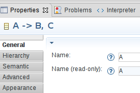
Pages are configured by creating a Page element inside a Properties View Description. In the illustration above, the two pages General and Hierarchy have been defined from the VSM. They appear above the standard tabs provided by Sirius ( Semantic, Advanced, etc.).
Much like the other properties view elements, you must specify the Identifier , Domain Class , Precondition Expression , Label Expression , Semantic Candidate Expression .
The definition of a page follows the general rules described above to determine the semantic elements for which a page should be created.
A page’s content is defined by the Groups it references, which are defined directly under the Properties View Description. The groups are ordered in the page accordingly to their order in the groups reference list in the VSM.
A page can also define toolbar actions which will be used to create buttons in the toolbar of the page to let the end user execute some operations easily. A Toolbar Action can have a tooltip by returning a string for the Tooltip expression. They also contain an Initial Operation used to define the model operations to execute when the user will click on the button. Finally a Toolbar Action can have an image thanks to an Image expression. The Image expression must return a string with the following structure PROJECT_NAME/IMAGE_PATH. For example: org.eclipse.sirius.sample.basicfamily.design/icons/Delete_16x16.gif. If an image is not provided or not found, a default image will be used.
A Group is used to represent a Section in a properties view tab.
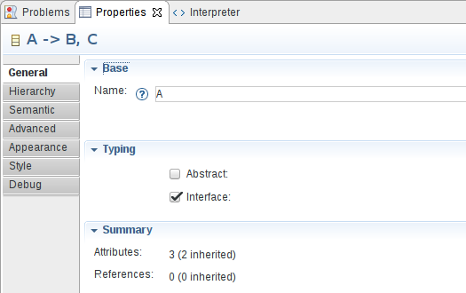
Groups are configured by creating a Group element inside a Properties View Description. Groups will only be visible inside a tab if they are referenced by the corresponding Page. By default, a newly created Group element is not part of any page, so you must add it explicitly to the Pages where it should appear. A single Group definition can be referenced in as many Page definition as needed; this allows sharing common sections between different pages.
Much like the other properties view elements, you must specify the Identifier , Domain Class , Precondition Expression , Label Expression , Semantic Candidate Expression , Styles , Conditional Styles .
The definition of a group follows the general rules described above to determine the semantic elements for which a group should be created.
A group can contain widgets , containers to organize them, and validation rules , all of which are defined inside the group description ( New Widget > Container|Text... and New > Group Validations, respectively).
A group can also define toolbar actions which will be used to create buttons in the toolbar of the group to let the end user execute some operations easily. A Toolbar Action can have a tooltip by returning a string for the Tooltip expression. They also contain an Initial Operation used to define the model operations to execute when the user will click on the button. Finally a Toolbar Action can have an image thanks to an Image expression. The Image expression must return a string with the following structure PROJECT_NAME/IMAGE_PATH. For example: org.eclipse.sirius.sample.basicfamily.design/icons/Delete_16x16.gif. If an image is not provided or not found, a default image will be used.
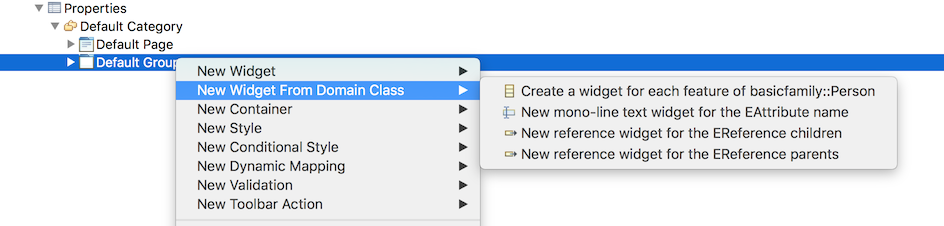
By specifying the Domain Class of a group and by specifying the metamodels on the relevant container of the group (like the Properties View object), you will have access to a new contextual action used to create a default version of a widget for each of the structural features of your Domain Class. You can create all the widgets at once or only the desired ones. The configuration generated in your odesign is heavily inspired by the default rules available, as such all the EString properties will be handled by a text widget, all the EBoolean properties by a checkbox, etc.
See the styles section for a general presentation of how styles are defined, including conditional styles. This section only presents the aspects which are specific to groups.
For groups you can define the following style attributes:
TITLE BAR,
SHORT TITLE BAR,
NO TITLE (see the first table below for illusrations of these styles).
TWISTIE,
TREE NODE,
NONE (see the second table below for illusrations of these styles).
The following tables illustrate the different Bar Style and Toggle Style available on groups:
|
|
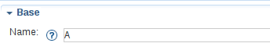 | 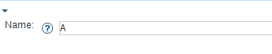 |
TITLE BAR
|
SHORT TITLE BAR
|
NO TITLE
|
|---|

|
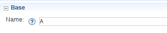 | 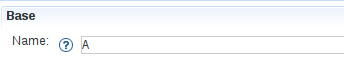 |
TWISTIE
|
TREE NODE
|
NONE
|
|---|
A widget is used to represent model elements in the properties view and, for most of them, to allow users to edit said elements. Widgets can appear directly inside a group, a dynamic mapping or inside a container, in which case you can specify a specific layout which will be used to graphically organize all the widgets inside the container.
The definition of a widget follows the general rules described above to determine the semantic elements for which a widget should be created.
Much like the other properties view elements, you can specify the widget’s Label Expression , Help Expression , Is Enabled Expression , Styles , Conditional Styles .
A Text widget is used to represent a single line text in a group or in a container.
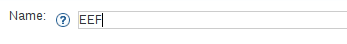
A Text Area is used to represent a multiple lines text in a group or in a container.
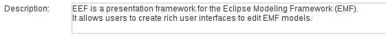
The definition of a text/text area follows the general rules described above to determine the semantic elements for which a text should be created. It is evaluated in the context of the semantic target element.
For texts and text areas, you must define the Value Expression which is used to compute the text displayed in the text field and should return a string. If the expression is not specified, the default value is an empty string. The expression is evaluated in the context of the semantic target element.
For text areas, you must define the Line Count which represents the height of the text area in number of lines.
To define the behavior of the text when a change occurs, you simply specify the behavior associated to the edition inside the Begin element directly contained inside the widget, using all the standard model operations.
The operations defined under the
Begin can use the
newValue variable which represents the value entered by the user (as a string). The root operation is executed in the context of the semantic target element.
Sirius automatically invokes the edit operation when the focus leaves the widget. For single-line Text widgets, the edit operation is also triggered when the user hits Enter. Note that if an error occurs while executing the edit operation, the whole effect of the operation on the underlying model is cancelled, and an error is logged.
See the styles section for a general presentation of how styles are defined, including conditional styles and widgets styles section to find details on what is specific to widgets. This section only presents the aspects which are specific to texts.
One of the responsibility of texts styles is to describe how text fields will be formated. The following properties are available :
Here are examples of text and text area widgets with some of their style attributes customized:
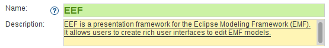
A Button is used to represent a button in a group or in a container, that can be used to trigger an arbitrary (configurable) operation on the model.
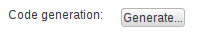
The definition of a button follows the general rules described above to determine the semantic elements for which a button should be created. It is evaluated in the context of the semantic target element.
For buttons, you must define the Button Label Expression which is used to compute the label displayed on the button and should return a string. If the expression is not specified, the default value is the empty string. You can also specify an image with the Image expression. An image can be used instead of a button label or along with it. The Image expression should return a string with the structure PROJECT_NAME/IMAGE_PATH. For example: org.eclipse.sirius.sample.basicfamily.design/icons/Delete_16x16.gif
To define the behavior of the button when it is clicked, simply specify the behavior associated to the edition inside the Begin element using all the standard model operations. The root operation is executed in the context of the semantic target element.
See the styles section for a general presentation of how styles are defined, including conditional styles and widgets styles section to find details on what is specific to widgets.
A Label is used to represent a non editable text in a group or in a container.
Here is an example which shows two label widgets:
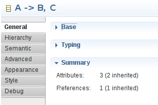
The definition of a label follows the general rules described above to determine the semantic elements for which a label should be created. It is evaluated in the context of the semantic target element.
For labels, you must define the
Value Expression which is used to compute the text displayed in the description. The
Value Expression can return any kind of object but the result displayed will be the result of a call to
Object.toString(). If you want to customize how the result will be displayed, you can return a string in the value expression or use the
Display Expression. The
Display Expression will have access to the result of the
Value Expression using the variable
value and it should return a string. If the expression is not specified, the default value is the empty string.
A Label can optionally define one or more Widget Actions, which are created as children element of the Label element ( New > Widget Action). Each action has a Label Expression and a behavior defined by model operations contained inside. If present, actions will be rendered as buttons on the right of the label itself. The button’s text is defined by the Label Expression, and its behavior when pushed by the model operations. You can also specify an image with the Image expression. An image can be used instead of a label or along with it. The Image expression should return a string with the structure PROJECT_NAME/IMAGE_PATH. For example: org.eclipse.sirius.sample.basicfamily.design/icons/Delete_16x16.gif
See the styles section for a general presentation of how styles are defined, including conditional styles and widgets styles section to find details on what is specific to widgets. This section only presents the aspects which are specific to texts.
One of the responsibility of labels styles is to describe how descriptions will be formated. The following properties are available :
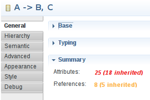
A Checkbox is used to represent a checkbox in a group or in a container.
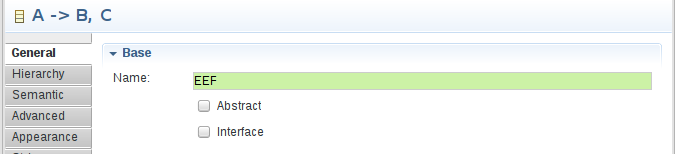
The definition of a checkbox follows the general rules described above to determine the semantic elements for which a checkbox should be created. It is evaluated in the context of the semantic target element.
For checkboxes, you must define the Value Expression which is used to compute the checked/unchecked state of the checkbox and so should return a boolean (return true to display the checkbox checked).
To define the behavior of the checkbox when the user clicks on it, you simply specify the behavior associated to the edition inside the Begin element using all the standard model operations.
The operations defined under the
Begin can use the
newValue variable which represents the value set by the user as a boolean; it will be
true if the checkbox was unchecked before, and the user clicked on it to check it,
false otherwise. Note that if an error occurs while executing the edit operation, the whole effect of the operation on the underlying model is canelled, and an error is logged.
See the styles section for a general presentation of how styles are defined, including conditional styles and widgets styles section to find details on what is specific to widgets.
A Select is used to represent a combo box in a group or in a container.

The definition of a select follows the general rules described above to determine the semantic elements for which a select should be created. It is evaluated in the context of the semantic target element.
For selects, you must define :
candidate variable which represents the element currently evaluated.
To define the behavior of the Select when the user selects a different element, you simply specify the behavior associated to the edition inside the Begin element using all the standard model operations.
The expressions defined under the
Begin can use the
newValue variable which represents the value selected by the user. Note that if an error occurs while executing the edit operation, the whole effect of the operation on the underlying model is cancelled, and an error is logged.
See the styles section for a general presentation of how styles are defined, including conditional styles and widgets styles section to find details on what is specific to widgets.
A Radio is used to represent a radio group in a group or in a container.
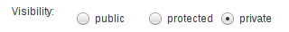
The definition of a radio group follows the general rules described above to determine the semantic elements for which a radio group should be created. It is evaluated in the context of the semantic target element.
For radio groups, you must define :
candidate variable which represents the element currently evaluated.
To define the behavior of the radio group when the selection changes, you simply specify the behavior associated to the edition inside the Begin element using all the standard model operations.
The expressions defined under the
Begin can use the
newValue variable which represents the value selected by the user. Note that if an error occurs while executing the edit operation, the whole effect of the operation on the underlying model is cancelled, and an error is logged.
See the styles section for a general presentation of how styles are defined, including conditional styles and widgets styles section to find details on what is specific to widgets.
A Hyperlink is used to represent an hyperlink in a group or in a container.
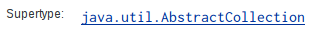
The definition of an hyperlink follows the general rules described above to determine the semantic elements for which an hyperlink should be created. It is evaluated in the context of the semantic target element.
For hyperlinks, you must define the
Value Expression which is used to compute the hyperlink displayed. The
Value Expression can return any kind of object but the result displayed will be the result of a call to
java.lang.Object#toString(). If you want to customize how the result will be displayed, you can return a String in the value expression or use the
Display Expression. The
Display Expression will have access to the result of the
Value Expression using the variable named
value and it should return a String.
To define the behavior of the hyperlink when it is clicked, you simply specify the behavior associated to the edition inside the Begin element using all the standard model operations.
A Hyperlink can optionally define one or more Widget Actions, which are created as children element of the Hyperlink element ( New > Widget Action). Each action has a Label Expression and a behavior defined by model operations contained inside. If present, actions will be rendered as buttons on the right of the label itself. The button’s text is defined by the Label Expression, and its behavior when pushed by the model operations. You can also specify an image with the Image expression. An image can be used instead of a button label or along with it. The Image expression should return a string with the structure PROJECT_NAME/IMAGE_PATH. For example: org.eclipse.sirius.sample.basicfamily.design/icons/Delete_16x16.gif
See the styles section for a general presentation of how styles are defined, including conditional styles and widgets styles section to find details on what is specific to widgets. This section only presents the aspects which are specific to hyperlinks.
One of the responsibility of hyperlinks styles is to describe how hyperlinks will be formated. The following properties are available :
A Reference is used to represent the value of a reference in the model.
The configuration of the Reference widget is minimal. Beside the standard properties available on all widgets like Label Expression, Help Expression and Is Enabled Expression, you only need to specify:
var:self. If specified, the reference to display will be looked on the element returned by the expression instead of the current one.
The Reference widget’s appearance will depend whether the reference to display is single-valued or multi-valued:
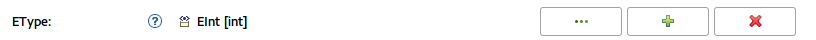
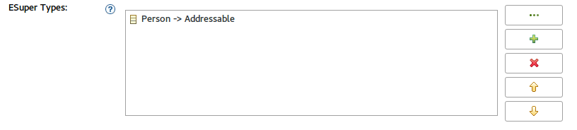
As mentioned above, the configurability of the Reference widget is minimal, it determines all of its behavior using the standard EMF features:
eGet.
IItemLabelProvider.
If you need more specific behavior, you need to use either an Hyperlink (for single values) or a List widget (for multiple values) with custom actions implementing the required behavior.
In a similar fashion as the hyperlink and the list widgets, it is possible to define an Initial Operation on the reference widget in order to execute some model operations when the user will click on the widget. If an Initial Operation is configured, the single-valued version of the widget will use a hyperlink instead of a regular label.
See the styles section for a general presentation of how styles are defined, including conditional styles and widgets styles section to find details on what is specific to widgets.
A List is used to represent a list with buttons in a group or in a container.
Depending on the parameters configuration the list widget will be represented thanks to a list and multiple buttons when Widget Actions are defined.
The definition of a list follows the general rules described above to determine the semantic elements for which a list should be created. It is evaluated in the context of the semantic target element.
For lists, you must define:
value which corresponds to the element to display.
To define the behavior, you simply specify the behavior associated to the edition inside the
Begin element using all the standard
model operations. A variable named
onClickEventKind is available to determine if the operation has been triggered by a single click or double click. In case of a single click, the variable has the value “SINGLE_CLICK” and “DOUBLE_CLICK” in case of a double click.
The expressions defined under the
Begin can use the
selection variable which represents the values selected by the user. This variable will contain the list of the values selected.
A list can contain actions which represent buttons associated to the list field.
For actions, you must define the
Label Expression which is used to compute the label displayed on the button and should return a string. If the expression is not specified, the default value is equal to
.... You can also specify an image with the
Image expression. An image can be used instead of a button label or along with it. The
Image expression should return a string with the structure PROJECT_NAME/IMAGE_PATH. For example: org.eclipse.sirius.sample.basicfamily.design/icons/Delete_16x16.gif
To define the behavior of the button when is pushed, you simply specify the behavior associated to the edition inside the Begin element using all the standard model operations.
The expressions defined under the
Begin can use the
selection variable which represents the values selected by the user in the list field. Note that
selection is always a collection, even if only a single element is currently selected.
See the styles section for a general presentation of how styles are defined, including conditional styles and widgets styles section to find details on what is specific to widgets.
A
Custom Description is used when none of the predefined styles correspond to your need. Custom widgets are implemented in Java and use the
org.eclipse.eef.ide.ui.eefLifecycleManagerProvider extension point.
The definition of a custom widget follows the general rules described above to determine the semantic elements for which a custom widget should be created. It is evaluated in the context of the semantic target element.
For custom widgets, the Identifier is mandatory. It is used to find the widget contributed with the extension point.
See the reference documentation for how to actually implement your own basic custom widgets.
When you define a custom widget, it is possible to define some custom expression or operation which will be used by the custom widget implementation.
In this case, the
Identifier is mandatory. It would be used in the Java code to find the expression/operation contributed with the VSM.
See the styles section for a general presentation of how styles are defined, including conditional styles and widgets styles section to find details on what is specific to widgets. This section only presents the aspects which are specific to texts.
Basic custom widgets need to be configured using very generic Custom Expression/Operation, which makes them different and harder to use than the standard ones. Any configuration property which would be directly accessible in the VSM editor’s property sheet on a standard widget will need a specific Custom Expression with the exact expected identifier.
It is possible to improve custom widgets to be better integrated with the VSM editor, to the point that their configuration looks and feels like for any of the standard ones. For the specifier point of view, the configuration of these widgets follows the same principles as for the default ones.
See the reference documentation for how to actually implement your own advanced custom widgets.
Dynamic mappings are used for advanced scenarios where the set of widgets to display can not be known statically, but instead must be computed at runtime. A dynamic mapping contains conditional widgets definition, each of which may be instantiated zero or multiple times at runtime.
A Dynamic Mapping For can appear directly inside a group description, or inside a container, in which case you can specify a specific layout. You must specify an Iterable Expression which computes a list of elements to iterate over. The Iterator property must also be defined and corresponds to the name of the iteration variable that will be accessible inside the For. Inside the Dynamic Mapping For you can create any number of Dynamic Mapping If, which defines a Predicate Expression and can contain one widget.
At runtime, for a given input element selected by the user, Sirius will evaluate the iterable expression, and then for each of the elements returned will instanciate the widgets defined inside Dynamic Mapping If whose predicate holds true.
The dynamic mapping mechanism is the one used by Sirius to provide by default properties view even if you do not specify any
Properties View Description in your VSM.
If we take one of the default rules implemented by Sirius we have:
aql:self.eClass().eAllStructuralFeatures which means get all the structural features available for the current eClass.
eStructuralFeature.
aql:eStructuralFeature.eType.instanceTypeName = 'java.lang.String' which means that we just keep the structural features serialized as a String. Notice that in the predicate expression we use the variable
eStructuralFeature which was defined as the
Iterator.
aql:eStructuralFeature.name.toUpperFirst() + ':' which means get the name of the structural feature, capitalize the first letter and add
: at the end.
aql:self.eGet(eStructuralFeature.name) which means get the value associated to the given structural feature.
Thanks to this mechanism we defined that all the
String elements in our metamodel will be represented with a text field.
Some
Iterable Expression may return a result which can change depending on the structure of the model, contrary to the example above where the
Iterable Expression
aql:self.eClass().eAllStructuralFeatures will only use the structure of the metamodel. If an
Iterable Expression leverages the state of the model, it may be required to refresh the user interface when the
Iterable Expression is executed, as a result for such situation, you can set the boolean
Force Refresh to true on the
Dynamic Mapping For to indicate that the presence of dynamic mapping should trigger a full refresh.
Sirius provides a default algorithm to perform an automatic layout of all the controls in a properties view. If the default algorithm does not fit your needs, you can specify some parameters for alternate layouts directly inside the VSM. To do this you must first create a Container which will contains all the widgets to which the layout will apply, and then create and configure the layout to be used by the container to organize its children widgets:
Fill layout can organize elements inside the container either horizontally or vertically (configurable on the Fill layout element).
Grid layout can organize elements using a fixed number of column (configurable on the Grid layout element), which can optionally be made to all have the same width.
Styles define the graphical appearance of properties view elements. Sirius supports a rich set of possible styles, including
conditional styles which can dynamically change depending on the current state of the underlying model elements. If no style is defined a default style is applied by Sirius.
It is possible to re-define the default style by creating a style under the properties view element description.
One of the responsibility of widgets styles is to describe how labels will be formated. The following properties are available :
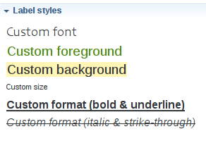
Whenever you have to specify colors for a style, you can use either one of the pre-defined system colors or one which you have defined yourself in a Users Color Palette. See the general section on colors for more details.
Conditional styles make it possible to support different graphical aspects for a single properties view element. The actual style used to render an element is determined dynamically depending on the current state of the models elements.
To use conditional styling, you must add one or several conditional styles. Each conditional style is associated to a condition specified as a predicate. If there are conditional styles on a properties view element, their conditions are tested in their order of appearance in the description. The first one for which the condition is true is selected. If none of the conditional styles condition is true, the default style is used instead.
There are three kind of validation rules that can be specified. The main difference between the various kind of validation rules available is the location of the validation messages (on a page, a group or a widget). All the validation rules can contains audits used to determine if the validation rule has been broken thanks to an
auditExpression which should return a boolean indicating if the validation of the rule is a success. The validation rules can also contain fixes in order to fix the issue found. Those validation fixes have a name and a fix expression which will be executed once the end user selects a quick fix. The fix expression does not have to return anything. All of those expressions have access to the variables
self, the result of the semantic candidate expression of the page or group and
input the input of the view.
The page semantic validation rule is used to define a validation rule linked to a page.
The group semantic validation rule is used to define a validation rule linked to a group.
The group property validation rule is used to define a validation rule linked to a specific widget.
Sirius has specific support for extending and overriding properties view descriptions without modifying the original one. The purpose is to be able to reuse or modify a part of a properties view. Its exits two different concepts to customize a properties view description: the extension and the overriding.
A page can extend another page defined somewhere else (in another category or in another properties view description). This mechanism is used to specialize (modify or re-use) an existing page. This feature is available for the pages, the groups, the containers, the dynamic mappings and the widgets.
The
Extend tab is used to specify:
Extends. Is used to specify the inherited element thanks to a combo box it is possible to select an existing element. In the tree editor, the inheritance is visible as the element is named as following :
Page A
extends
Page B. Pay attention, the current specification editor allows to select the currently defined element, this will lead to an infinite loop at runtime.
By default, the values of the
General tab fields are set with the values coming from the extended element if these fields are not set in the extending element. If one of these attributes is edited in the extending element, then it
overrides the inherited value. The same behavior is applied for mono valued containment elements. For example, if a
Group A defines a
Style A and extends a
Group B with a
Style B, the style used to render the
Group A is the one defined under the
Group A, i.e
Style A and not the one of the
Group B.
If the specifier defines in the extending page
General tab:
Label Expression,
Domain Class,
Semantic Candidate Expression or
Precondition Expression, these values will
override the values defined in the extended description. It is worth noting that the expressions are evaluated in the context of the currently extending element, exactly as if you have defined the expressions from the
General tab.
Groups will
be aggregated to the groups defined by the referenced
Page.
Page Validations will
be aggregated to the validations defined by the referenced
Page Description.
Text contained by a
Group, the contained elements are inherited by the extending description.
Filter Expressions. Different filters exist depending on the element kind. These filters are used to
filter which inherited elements are visible. The
Filter expression is evaluated in the context of the semantic element and should return a boolean: true, the inherited element is visible, false it is filtered.
If the expression is not specified, all the inherited elements will be visible.
For each
Filter expression, a variable is available which represents the element which could be filtered. It is possible to filter all the inherited elements by just returning
false all the time. In this case, the elements defined under the current description
overrides the elements defined in the extended description.
For example if a
Page A extends another
Page B, the
Extends tab allows to define:
Filter Groups Expression is used to
filter which inherited groups are visible under the page. The
group variable can be used to check if a group must be filtered or not.
Filter Validation Rules Expression is used to
filter which inherited validation rules are used under the page. The
validationRule variable can be used to check if a rule must be filtered or not.
Following some examples of the extension mechanism usage are detailed:
Name:,
The name of the element,
aql:self.name,
name feature with the new entered value.
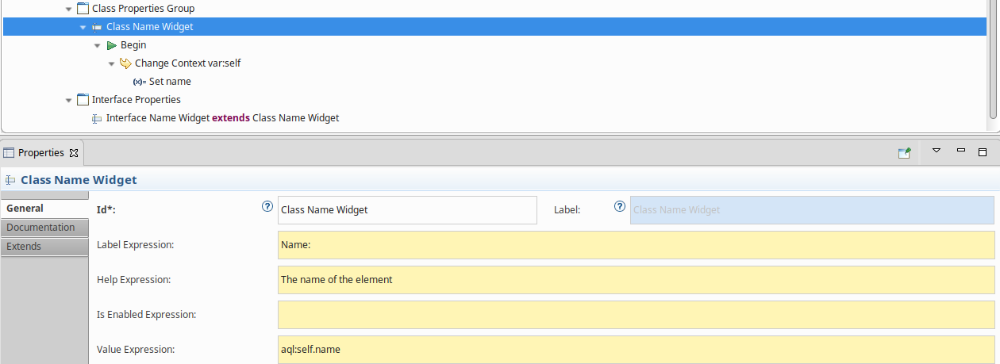
An interface has also a
Name attribute which must be shown in its properties view, then to define the properties of the interface, we just create a new text widget which extends the
Class Name Widget.
No other fields and no change value operation need to be set for the
Interface Name Widget, all the values will be inherited from the
Class Name Widget.
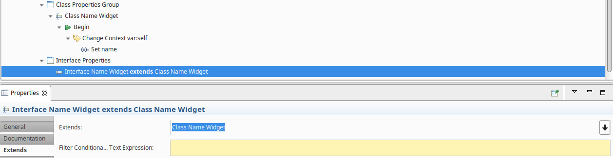
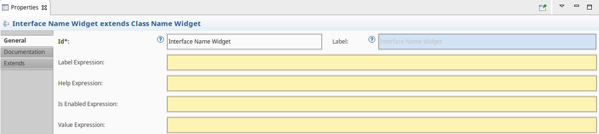
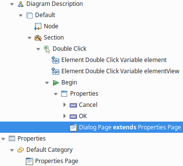
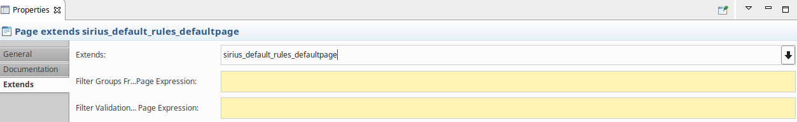
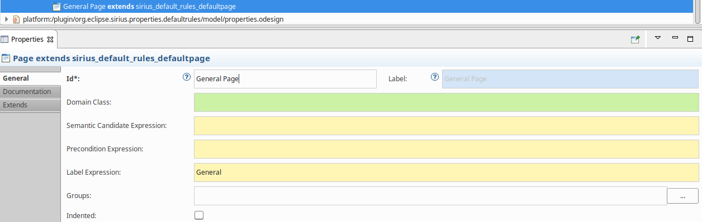
The main difference between the
extend mechanism and the
overrides mechanism is that the extend mechanism allows to reuse some parts of a properties view specification on another hand the
override mechanism allows to replace some parts of a properties view specification.
This means that when you define an override description it will completely replace the referenced description, this must be used when it is not possible for the specifier to modify the original description.
It is possible to create an override element under a category from the New Override menu.
A page override can extend another page defined somewhere else (in another category or in another properties view description). This mechanism is used to replace an existing page. It is possible to define :
The
Extend tab is used to specify:
Extends. Is used to specify the overridden element thanks to a combo box it is possible to select an existing element. In the tree editor, the inheritance is visible as the element is named as following :
Page A
extends
Page B. Pay attention, the current specification editor allows to select the currently defined element, this will lead to an infinite loop at runtime.
By default, the values of the
General tab fields are set with the values coming from the overridden element if these fields are not set in the extending element. If one of these attributes is edited in the extending element, then it
overrides the inherited value. The same behavior is applied for mono valued containment elements. For example, if a
Group A defines a
Style A and extends a
Group B with a
Style B, the style used to render the
Group A is the one defined under the
Group A, i.e
Style A and not the one of the
Group B.
If the specifier defines in the extending page
General tab:
Label Expression,
Domain Class,
Semantic Candidate Expression or
Precondition Expression, these values will
override the values defined in the extended description. It is worth noting that the expressions are evaluated in the context of the currently extending element, exactly as if you have defined the expressions from the
General tab.
Groups will
be aggregated to the groups defined by the referenced
Page.
Page Validations will
be aggregated to the validations defined by the referenced
Page Description.
Text contained by a
Group, the contained elements are inherited by the extending description.
Filter Expressions. Different filters exist depending on the element kind. These filters are used to
filter which inherited elements are visible. The
Filter expression is evaluated in the context of the semantic element and should return a boolean: true, the inherited element is visible, false it is filtered.
If the expression is not specified, all the inherited elements will be visible.
For each
Filter expression, a variable is available which represents the element which could be filtered. It is possible to filter all the inherited elements by just returning
false all the time. In this case, the elements defined under the current description
overrides the elements defined in the extended description.
For example if a
Page A extends another
Page B, the
Extends tab allows to define:
Filter Groups Expression is used to
filter which inherited groups are visible under the page. The
group variable can be used to check if a group must be filtered or not.
Filter Validation Rules Expression is used to
filter which inherited validation rules are used under the page. The
validationRule variable can be used to check if a rule must be filtered or not.
If an element is overridden by many override definitions, the first encountered in the specification is applied.
Integrating and advanced custom widget implementation requires extending several extension points:
org.eclipse.emf.edit.childCreationExtenders: When generating the metamodel for the custom configuration DSL of your widget, make sure EMF’s
childCreationExtenders mechanism is properly configured so that the Sirus VSM editor will see your custom widget type and allow them to be created in the
New context menu.
org.eclipse.sirius.ui.properties.descriptionConverter: This extension point allows you to particpate in the conversion of the Sirius-side VSM model into the EEF DSL. With this mechanism, you can translate for the EEF runtime new elements that you have contributed in the Sirius Properties DSL.
org.eclipse.sirius.ui.properties.descriptionLinkResolver: This extension point may be needed in complement to the
descriptionConverter if some post-transformation step is needed on your transformed model to perform global link resolution.
org.eclipse.sirius.ui.properties.descriptionPreprocessor: This extension point allows you to participate in the preprocessing of the Sirius-side VSM model with
extensibility featires into a
flatten Sirius-side VSM model.
Please refer to the documentation for each of these for more details. And the reference documentation for the full details on how to actually implement your own advanced custom widgets.
The EEF runtime used internally by Sirius to render the properties views has programmatic support for filtering property tabs that you may want to hide in your context. For example you may want to filter out some legacy tabs defined statically if you provide alternative versions defined dynamically in Sirius.
This feature is not currently exposed via the Sirius VSMs, but you can still use it by implementing the
org.eclipse.eef.properties.ui.api.IEEFTabDescriptorFilter interface, and registering your implementation in the
org.eclipse.eef.properties.ui.eefTabDescriptorFilter extension point defined in EEF.
The interface defines a single method
boolean filter(IEEFTabDescriptor tabDescriptor) which will be called for each candidate tab to display. If at least one of the
IEEFTabDescriptorFilter registered indicates that the tab should be filtered, it will not be displayed.
Please refer to the EEF extension point documentation for more details.